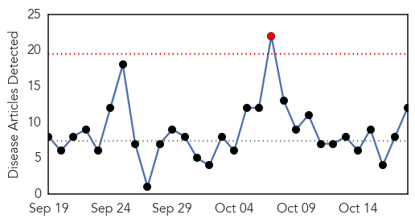
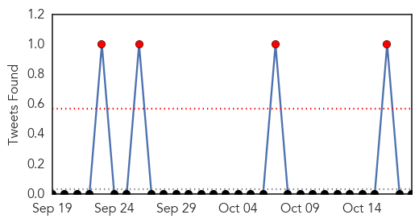
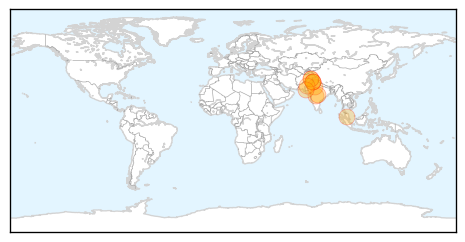
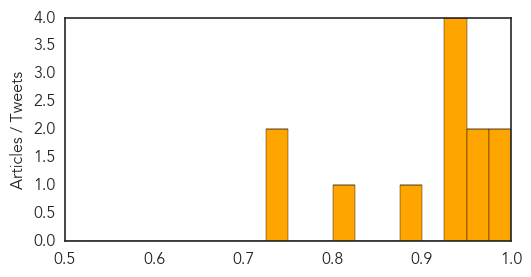

Toggle navigation
Early Warning
Daily Alerts
Dengue Fever
Oct 18, 2014
Compare to:
-
Hemmorhagic Fever
Mold/Fungal Infection
Influenza
Meningitis
Pertussis / Whooping Cough
Middle East Respiratory Syndrome
Cholera
Hepatitis
Chikungunya
Yellow Fever
Bubonic Plague
West Nile Virus
Swine Flu
Ebola
Measles
Unknown
Mumps
30 Day Trends
Web: 1
alerts
, 0
warnings
Twitter: 4
alerts
, 0
warnings
Top Articles:
0.993
9 die in scrub typhus outbreak
0.985
Dengue claims ex-corporator’s daughter, toll 2
0.964
Ebola virus: Sharif for screening passengers at airports
0.956
Dengue update: Eight new cases emerge in Rawalpindi
0.944
‘Dengue movement reduced by cold weather’
0.941
CM orders steps to check dengue, Ebola virus
0.939
Health department gears up to keep diseases at bay this monsoon
0.933
Schools reopen amid fears in bordering villages
0.899
Slight drop in number of dengue cases from Oct 5 - Nation
0.824
Anti-dengue steps stressed
0.740
Indifference of related staff causing dengue fever spread
0.734
29 more cases surface
Top Tweets:
No tweets found for Oct 18, 2014
Web/News Articles

Tweets

Article Locations

Article Confidences
